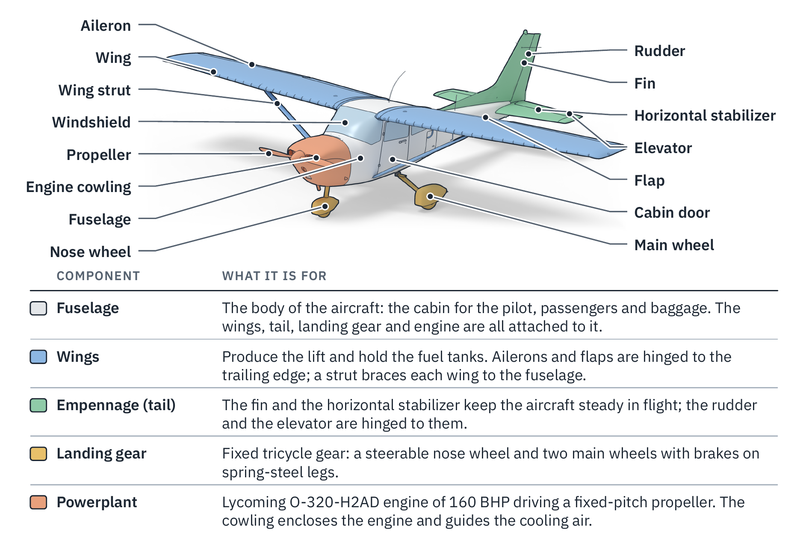
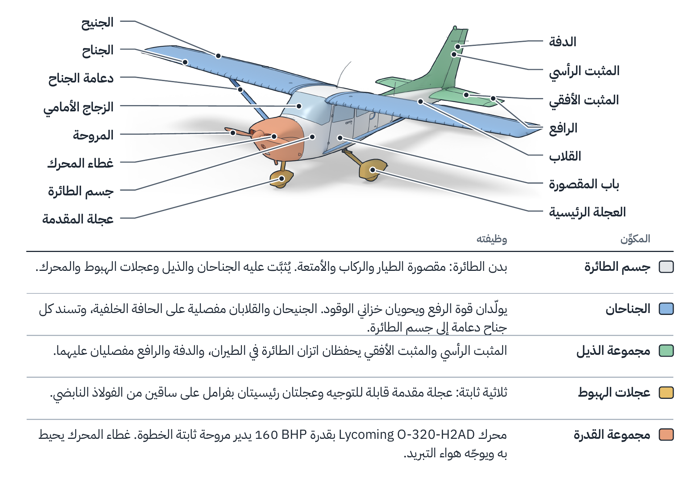
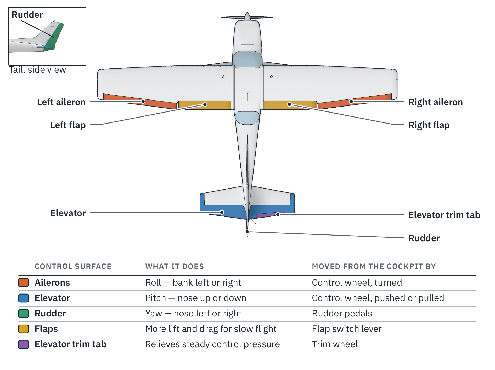
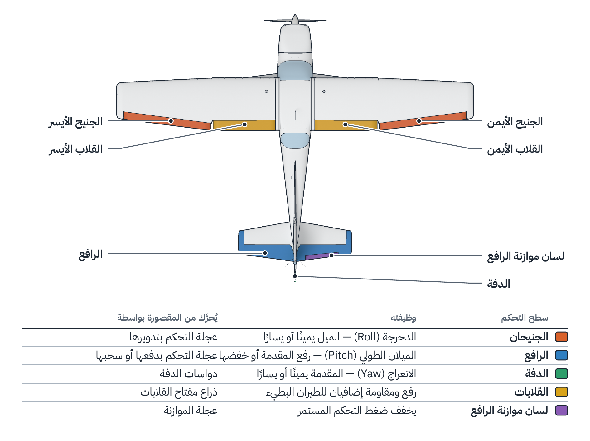

Fly GACA · Cessna 172N, 1979فلاي قاكا · سيسنا 172N، موديل 1979
C172N Training Handbookدليل التدريب لطائرة سيسنا C172N
FlyGACA's own reference for the Cessna 172N of its digital twin, with the page of the Pilot's Operating Handbook behind every valueمرجع FlyGACA الخاص لطائرة سيسنا 172N في توأمها الرقمي، وبجانب كل قيمة صفحتها في دليل تشغيل الطيار (POH)
Read this firstاقرأ هذا أولًا
This is not a Pilot's Operating Handbook or an Airplane Flight Manual. No authority and no manufacturer has approved it. It is a study reference written by FlyGACA for the aeroplane of its digital twin.هذا ليس دليل تشغيل الطيار (POH) ولا دليل طيران الطائرة (AFM)، ولم تعتمده أي جهة تنظيمية ولا أي جهة مصنّعة. إنه مرجع دراسي كتبته FlyGACA للطائرة التي يمثلها توأمها الرقمي.
Its values were read from the Cessna Model 172N Pilot's Operating Handbook, 1979 model, and each one shows the page it came from. A particular aircraft can differ from them: its equipment, its weight and balance record and the revisions of its own handbook decide.قُرئت قيمه من دليل تشغيل الطيار لطائرة Cessna Model 172N موديل 1979، وتظهر بجانب كل قيمة الصفحة التي أُخذت منها. وقد تختلف طائرة بعينها عنها، فالحكم لتجهيزاتها ولسجل وزنها واتزانها ولمراجعات دليلها هي.
Never fly from it. In the aeroplane, use the approved handbook and checklist of the aeroplane you fly.لا تطِر به أبدًا. في الطائرة استخدم الدليل المعتمد وقائمة التحقق للطائرة التي تطير بها.
1 Generalعام
The aeroplane described here is the one FlyGACA's digital twin models: a Cessna 172N of the 1979 model year in its factory-standard form. The configuration of a particular serial number has not been checked against it.الطائرة الموصوفة هنا هي التي يمثلها التوأم الرقمي لـ FlyGACA: طائرة Cessna 172N من موديل 1979 في هيئتها القياسية كما خرجت من المصنع، ولم تُطابَق عليها هيئة طائرة بعينها برقمها التسلسلي.
| Engineالمحرك | Lycoming O-320-H2AD: four cylinders, horizontally opposed, air cooled, normally aspirated, carburettor equipped, direct drive, 320 cu inLycoming O-320-H2AD: أربع أسطوانات متقابلة أفقيًا، مبرَّد بالهواء، ذو سحب طبيعي، مزوَّد بمكربن، يدير المروحة مباشرة، سعته 320 cu in POH 1-3, 2-5 POH 1-3 |
|---|---|
| Rated powerالقدرة المقدَّرة | 160 BHP at 2700 RPM160 BHP عند 2700 RPM POH 1-3, 2-5 |
| Propellerالمروحة | McCauley 1C160/DTM7557, fixed pitch, two blades; diameter 75 in maximum, 74 in minimumMcCauley 1C160/DTM7557، ثابتة الخطوة، بشفرتين؛ قطرها 75 in حدًّا أقصى و74 in حدًّا أدنى POH 1-3, 2-5, 7-20 |
| Fuel gradeدرجة الوقود | 100LL (blue) or 100 (green)100LL (أزرق) أو 100 (أخضر) POH 1-3 |
| Fuel, standard tanksالوقود، الخزانات القياسية | 21.5 gal each; 43 gal in all, of which 40 gal usable21.5 gal في كل خزان؛ 43 gal في المجموع، منها 40 gal قابلة للاستخدام POH 1-4, 7-21 |
| Fuel, long-range tanksالوقود، خزانات المدى الطويل | 27 gal each; 54 gal in all, of which 50 gal usable27 gal في كل خزان؛ 54 gal في المجموع، منها 50 gal قابلة للاستخدام POH 1-4, 7-21 |
| Oilالزيت | 6 qt in the sump; 7 qt in all with the oil filter6 qt في حوض الزيت؛ و7 qt في المجموع مع مرشّح الزيت POH 1-4, 7-18 |
| Maximum takeoff weightالوزن الأقصى للإقلاع | 2300 lb, normal category2300 lb، في الفئة العادية POH 1-5 |
| Dimensionsالأبعاد | wing span 36 ft (with strobe lights); length 26 ft 11 in; height 8 ft 9½ in maximum; horizontal tail span 11 ft 4 in; main wheel track 8 ft 4½ in; wheel base 65 in; propeller ground clearance 11¾ in; wing area 174 sq ftامتداد الجناح 36 ft (مع أضواء الوميض)؛ الطول 26 ft 11 in؛ الارتفاع 8 ft 9½ in حدًّا أقصى؛ امتداد الذيل الأفقي 11 ft 4 in؛ المسافة بين العجلتين الرئيسيتين 8 ft 4½ in؛ قاعدة العجلات 65 in؛ خلوص المروحة عن الأرض 11¾ in؛ مساحة الجناح 174 sq ft POH 1-2 Fig 1-1 |
| Turning radiusنصف قطر الدوران | 27 ft 5½ in at least, from the pivot point to the outboard wing tip27 ft 5½ in على الأقل، من نقطة الارتكاز إلى طرف الجناح الخارجي POH 1-2 Fig 1-1 |


2 Limitationsالحدود
The limits below are those the 1979 handbook gives. Speeds are indicated airspeeds in knots (KIAS).الحدود الآتية هي التي يعطيها دليل موديل 1979. السرعات سرعات مبيَّنة بالعقدة (KIAS).
| Never exceed speed, VNEالسرعة التي لا تُتجاوز، VNE | 160 KIAS160 KIAS POH 2-4 Fig 2-1 |
|---|---|
| Maximum structural cruising speed, VNOالسرعة القصوى للطيران الهيكلي، VNO | 128 KIAS128 KIAS POH 2-4 Fig 2-1 |
| Manoeuvring speed, VAسرعة المناورة، VA | 97 KIAS at 2300 lb97 KIAS عند 2300 lb POH 2-4 Fig 2-1 |
| Maximum flap extended speed, VFEالسرعة القصوى مع القلابات ممدودة، VFE | 110 KIAS with flaps 10°; 85 KIAS with flaps 10° to 40°110 KIAS مع القلابات 10°؛ و85 KIAS مع القلابات من 10° إلى 40° POH 2-4 Fig 2-1 |
| Markingالعلامة | Rangeالمدى | Meaningالمعنى |
|---|---|---|
| White arcالقوس الأبيض | 41–85 KIAS | Full-flap operating rangeمدى التشغيل بالقلابات كاملة |
| Green arcالقوس الأخضر | 47–128 KIAS | Normal operating rangeمدى التشغيل العادي |
| Yellow arcالقوس الأصفر | 128–160 KIAS | Caution rangeمدى الحذر |
| Red lineالخط الأحمر | 160 KIAS | Never exceedلا تتجاوزها |

| Instrumentالعداد | Green arcالقوس الأخضر | Red lineالخط الأحمر |
|---|---|---|
| Tachometerعداد الدورات | 2100–2450 RPM at sea level; the green arc extends to 2575 RPM at 5000 ft and 2700 RPM at 10000 ft2100–2450 RPM عند مستوى سطح البحر؛ ويمتد القوس الأخضر إلى 2575 RPM عند 5000 ft وإلى 2700 RPM عند 10000 ft | 2700 RPM |
| Oil pressureضغط الزيت | 60–90 psi | Minimum 25 psi; Maximum 100 psiالحد الأدنى 25 psi؛ الحد الأقصى 100 psi |
| Oil temperatureدرجة حرارة الزيت | 100–245 °F | 245 °F |
| Suctionمقياس التفريغ | 4.5–5.4 inHg | — |
| Maximum engine speedأقصى سرعة للمحرك | 2700 RPM2700 RPM POH 2-5, 2-6 |
|---|---|
| Static RPM at full throttleالدورات الثابتة بالخانق الكامل | 2280 to 2400 RPM, carburettor heat off, mixture full richمن 2280 إلى 2400 RPM، وتسخين المكربن مغلق والخليط غني كاملًا POH 2-5 |
| Unusable fuelالوقود غير القابل للاستخدام | E red line on the gauges; 1.5 gal unusable in each standard tank, 2.0 gal in each long-range tankخط أحمر عند E على المقياسين؛ و1.5 gal غير قابلة للاستخدام في كل خزان قياسي، و2.0 gal في كل خزان مدى طويل POH 2-6 Fig 2-3 |
| Maximum takeoff weightالوزن الأقصى للإقلاع | 2300 lb, normal category2300 lb، في الفئة العادية POH 1-5 |
| Weight, normal categoryالوزن، الفئة العادية | takeoff 2300 lb, landing 2300 lbالإقلاع 2300 lb، والهبوط 2300 lb POH 2-6, 2-7 |
|---|---|
| Weight, utility categoryالوزن، الفئة النفعية (Utility) | takeoff 2000 lb, landing 2000 lb, with the baggage compartment and the rear seat not occupiedالإقلاع 2000 lb، والهبوط 2000 lb، مع إبقاء حجرة الأمتعة والمقعد الخلفي غير مشغولين POH 2-6, 2-7 |
| Baggageالأمتعة | area 1 (stations 82 to 108): 120 lb; area 2 (stations 108 to 142): 50 lb; the two areas together: 120 lb at mostالمنطقة 1 (المحطات من 82 إلى 108): 120 lb؛ والمنطقة 2 (المحطات من 108 إلى 142): 50 lb؛ والمنطقتان معًا: 120 lb على الأكثر POH 2-6, 2-12 |
| Centre of gravity, normal categoryمركز الثقل، الفئة العادية | forward limit 35.0 in aft of the datum at 1950 lb or less, in a straight line to 38.5 in at 2300 lb; aft limit 47.3 in at all weightsالحد الأمامي 35.0 in خلف نقطة المرجع عند 1950 lb أو أقل، ثم بخط مستقيم إلى 38.5 in عند 2300 lb؛ والحد الخلفي 47.3 in عند كل الأوزان POH 2-7 |
| Centre of gravity, utility categoryمركز الثقل، الفئة النفعية (Utility) | forward limit 35.0 in at 1950 lb or less, in a straight line to 35.5 in at 2000 lb; aft limit 40.5 in at all weightsالحد الأمامي 35.0 in عند 1950 lb أو أقل، ثم بخط مستقيم إلى 35.5 in عند 2000 lb؛ والحد الخلفي 40.5 in عند كل الأوزان POH 2-7 |
| Flight load factors, normal category, 2300 lbعوامل الحمل في الطيران، الفئة العادية، 2300 lb | flaps up +3.8 g and -1.52 g; flaps down +3.0 g. The design load factors are 150% of these.القلابات مرفوعة +3.8 g و-1.52 g؛ والقلابات ممدودة +3.0 g. وعوامل الحمل التصميمية 150% من هذه القيم. POH 2-8 |
| Flight load factors, utility category, 2000 lbعوامل الحمل في الطيران، الفئة النفعية (Utility)، 2000 lb | flaps up +4.4 g and -1.76 g; flaps down +3.0 gالقلابات مرفوعة +4.4 g و-1.76 g؛ والقلابات ممدودة +3.0 g POH 2-8 |
| Manoeuvres, normal categoryالمناورات، الفئة العادية | non-aerobatic. Approved: stalls except whip stalls, lazy eights, chandelles, and turns with a bank of not more than 60°. Spins and other aerobatics are not approved.بلا أكروبات. المسموح: الانهيارات عدا الانهيار الارتدادي (whip stall)، والثمانيات البطيئة (lazy eights)، والصعود الحاد (chandelles)، والانعطافات بميل لا يزيد على 60°. والدوران الحلزوني (spin) وسائر الأكروبات غير مسموحة. POH 2-7, 2-8, 2-10 |
| Manoeuvres, utility categoryالمناورات، الفئة النفعية (Utility) | recommended entry speeds: chandelles 105 knots, lazy eights 105 knots, steep turns 95 knots; spins and stalls by slow deceleration. Intentional spins with flaps extended are prohibited. Abrupt use of the controls is prohibited above 97 knots.سرعات الدخول الموصى بها: الصعود الحاد 105 عقدة، والثمانيات البطيئة 105 عقدة، والانعطافات الحادة 95 عقدة؛ والدوران الحلزوني والانهيارات بإبطاء السرعة تدريجيًا. ويُمنع الدوران الحلزوني المتعمد والقلابات ممدودة. ويُمنع الاستخدام المفاجئ لأدوات التحكم فوق 97 عقدة. POH 2-7, 2-8, 2-10 |
| Kinds of operationأنواع التشغيل | day VFR; night VFR and IFR when the aeroplane is equipped for them. Flight into known icing conditions is prohibited.طيران نهاري بالرؤية (VFR)؛ وطيران ليلي بالرؤية (VFR) وبالأجهزة (IFR) إذا كانت الطائرة مجهزة لهما. ويُمنع الطيران في ظروف جليد معروفة. POH 2-9 |
| Fuelالوقود | standard tanks: 21.5 gal each, 43 gal in all, 40 gal usable, 3 gal unusable. Long-range tanks: 27 gal each, 54 gal in all, 50 gal usable, 4 gal unusable. To fill to full capacity, set the selector to LEFT or RIGHT; take off and land with it on BOTH. Grades 100LL (blue) and 100 (green).الخزانات القياسية: 21.5 gal لكل منهما، و43 gal في المجموع، منها 40 gal قابلة للاستخدام و3 gal غير قابلة للاستخدام. وخزانات المدى الطويل: 27 gal لكل منهما، و54 gal في المجموع، منها 50 gal قابلة للاستخدام و4 gal غير قابلة للاستخدام. وللتعبئة حتى السعة الكاملة اضبط الصمام على LEFT أو RIGHT؛ وأقلِع واهبط وهو على BOTH. والأنواع المعتمدة 100LL (أزرق) و100 (أخضر). POH 2-9 |
3 Emergency proceduresإجراءات الطوارئ
These are the actions the handbook's emergency checklists give, in FlyGACA's words and for study. The handbook has more emergency procedures than the twin records; read all of them, and fly with the approved checklist of your aeroplane.هذه هي الإجراءات التي تعطيها قوائم الطوارئ في دليل الطائرة، بصياغة FlyGACA ولغرض الدراسة. وفي الدليل إجراءات طوارئ أكثر مما سجّله التوأم، فاقرأها كلها، وطِر بقائمة التحقق المعتمدة لطائرتك.
Engine failure in flight: restartتوقف المحرك في الجو: إعادة التشغيل POH 3-4
- Airspeed 65 KIAS.السرعة 65 KIAS.
- Carburettor heat ON.تسخين المكربن مفتوح (ON).
- Fuel selector BOTH.صمام اختيار الوقود على BOTH.
- Mixture RICH.الخليط غني (RICH).
- Ignition switch BOTH, or START if the propeller has stopped.مفتاح الإشعال على BOTH، أو على START إن توقفت المروحة.
- Primer IN and LOCKED.مضخة التحضير (primer) مدفوعة ومقفلة (IN and LOCKED).
The best glide, flaps up and the propeller windmilling, is at 65 KIAS, with a glide ratio of 9.1.أفضل انزلاق دون قدرة، والقلابات مرفوعة والمروحة تدور بفعل الهواء، عند 65 KIAS، بنسبة انزلاق 9.1. POH 3-11 Fig 3-1
LOW VOLTAGE light in flightضوء LOW VOLTAGE في الجو POH 3-9
- Avionics OFF.أجهزة الإلكترونيات الجوية مغلقة (OFF).
- Master switch OFF, both halves.المفتاح الرئيسي مغلق (OFF) بنصفيه.
- Master switch ON.المفتاح الرئيسي مفتوح (ON).
- Check that the light is OFF.تحقق من أن الضوء انطفأ.
- Avionics ON.أجهزة الإلكترونيات الجوية مفتوحة (ON).
If the light comes on again: alternator OFF, non-essential electrical equipment OFF, and end the flight.وإن عاد الضوء: المولّد المتناوب مغلق (OFF)، والأجهزة الكهربائية غير الضرورية مغلقة، وأنهِ الرحلة.
The light can also come on at low RPM with an electrical load. On an over-voltage the alternator control unit removes the alternator field; recycling the master switch resets it.وقد يضيء الضوء أيضًا عند دورات منخفضة مع حمل كهربائي. وعند ارتفاع الجهد يقطع جهاز التحكم بالمولّد مجاله، ويُعاد ضبطه بإطفاء المفتاح الرئيسي وتشغيله من جديد. POH 7-26
Speeds for emergency operation: after an engine failure on takeoff, 65 KIAS flaps up and 60 KIAS flaps down; manoeuvring speed 97 KIAS at 2300 lb, 89 KIAS at 1950 lb and 80 KIAS at 1600 lb; precautionary landing with engine power 60 KIAS; landing without engine power 65 KIAS flaps up and 60 KIAS flaps down.سرعات التشغيل في الطوارئ: بعد توقف المحرك عند الإقلاع 65 KIAS والقلابات مرفوعة و60 KIAS والقلابات ممدودة؛ وسرعة المناورة 97 KIAS عند 2300 lb، و89 KIAS عند 1950 lb، و80 KIAS عند 1600 lb؛ والهبوط الاحترازي بوجود قدرة المحرك 60 KIAS؛ والهبوط دون قدرة المحرك 65 KIAS والقلابات مرفوعة و60 KIAS والقلابات ممدودة. POH 3-3
Engine failure during the takeoff runتوقف المحرك أثناء جري الإقلاع POH 3-3
- Throttle IDLE.الخانق على IDLE.
- Brakes APPLY.الفرامل: اضغطها (APPLY).
- Wing flaps RETRACT.القلابات: اسحبها (RETRACT).
- Mixture IDLE CUT-OFF.الخليط على IDLE CUT-OFF.
- Ignition switch OFF.مفتاح الإشعال مغلق (OFF).
- Master switch OFF.المفتاح الرئيسي مغلق (OFF).
Engine failure immediately after takeoffتوقف المحرك مباشرة بعد الإقلاع POH 3-4
- Airspeed 65 KIAS with flaps up, 60 KIAS with flaps down.السرعة 65 KIAS والقلابات مرفوعة، و60 KIAS والقلابات ممدودة.
- Mixture IDLE CUT-OFF.الخليط على IDLE CUT-OFF.
- Fuel selector valve OFF.صمام اختيار الوقود مغلق (OFF).
- Ignition switch OFF.مفتاح الإشعال مغلق (OFF).
- Wing flaps as required.القلابات حسب الحاجة.
- Master switch OFF.المفتاح الرئيسي مغلق (OFF).
Emergency landing without engine powerهبوط اضطراري دون قدرة المحرك POH 3-4
- Airspeed 65 KIAS with flaps up, 60 KIAS with flaps down.السرعة 65 KIAS والقلابات مرفوعة، و60 KIAS والقلابات ممدودة.
- Mixture IDLE CUT-OFF.الخليط على IDLE CUT-OFF.
- Fuel selector valve OFF.صمام اختيار الوقود مغلق (OFF).
- Ignition switch OFF.مفتاح الإشعال مغلق (OFF).
- Wing flaps as required; 40° is recommended.القلابات حسب الحاجة؛ والموصى به 40°.
- Master switch OFF.المفتاح الرئيسي مغلق (OFF).
- Doors unlatched before touchdown.الأبواب غير مقفلة قبل الملامسة.
- Touchdown slightly tail low.الملامسة والذيل منخفض قليلًا.
- Brakes applied heavily.الفرامل: اضغطها بقوة.
Precautionary landing with engine powerهبوط احترازي بوجود قدرة المحرك POH 3-4
- Wing flaps 20°.القلابات 20°.
- Airspeed 60 KIAS.السرعة 60 KIAS.
- Fly over the selected field, noting the terrain and obstructions, then retract the flaps on reaching a safe altitude and airspeed.حلّق فوق الحقل المختار مع ملاحظة التضاريس والعوائق، ثم اسحب القلابات عند بلوغ ارتفاع وسرعة آمنين.
- Avionics power switch and electrical switches OFF.مفتاح قدرة الإلكترونيات الجوية والمفاتيح الكهربائية مغلقة (OFF).
- Wing flaps 40° on final approach.القلابات 40° في المرحلة النهائية.
- Airspeed 60 KIAS.السرعة 60 KIAS.
- Master switch OFF.المفتاح الرئيسي مغلق (OFF).
- Doors unlatched before touchdown.الأبواب غير مقفلة قبل الملامسة.
- Touchdown slightly tail low.الملامسة والذيل منخفض قليلًا.
- Ignition switch OFF.مفتاح الإشعال مغلق (OFF).
- Brakes applied heavily.الفرامل: اضغطها بقوة.
Fire during start on the groundحريق أثناء التشغيل على الأرض POH 3-5, 3-6
- Keep cranking, to draw the flames and the accumulated fuel through the carburettor and into the engine.استمر في إدارة المحرك لسحب اللهب والوقود المتراكم عبر المكربن إلى داخل المحرك.
- If the engine starts: power 1700 RPM for a few minutes, then shut down and inspect for damage.إن اشتغل المحرك: القدرة 1700 RPM لبضع دقائق، ثم أطفئه وافحصه بحثًا عن تلف.
- If it does not start: throttle full open, mixture IDLE CUT-OFF, keep cranking, and get the fire extinguisher.وإن لم يشتغل: الخانق مفتوح كاملًا، والخليط على IDLE CUT-OFF، واستمر في الإدارة، وأحضر طفاية الحريق.
- Secure the engine: master switch OFF, ignition switch OFF, fuel selector valve OFF.أمّن المحرك: المفتاح الرئيسي مغلق (OFF)، ومفتاح الإشعال مغلق (OFF)، وصمام الوقود مغلق (OFF).
- Put the fire out, and inspect the damage before another flight.أطفئ الحريق، وافحص الضرر قبل أي رحلة أخرى.
Engine fire in flightحريق المحرك في الجو POH 3-6
- Mixture IDLE CUT-OFF.الخليط على IDLE CUT-OFF.
- Fuel selector valve OFF.صمام اختيار الوقود مغلق (OFF).
- Master switch OFF.المفتاح الرئيسي مغلق (OFF).
- Cabin heat and air OFF, except the overhead vents.تدفئة المقصورة وهواؤها مغلقان، عدا فتحات التهوية العلوية.
- Airspeed 100 KIAS. If the fire is not out, increase the glide speed to find one that gives an incombustible mixture.السرعة 100 KIAS. وإن لم يخمد الحريق فزِد سرعة الانزلاق لإيجاد سرعة تعطي خليطًا غير قابل للاحتراق.
- Execute a forced landing, as in the landing without engine power.نفّذ هبوطًا اضطراريًا كما في الهبوط دون قدرة المحرك.
Electrical fire in flightحريق كهربائي في الجو POH 3-6, 3-7
- Master switch OFF.المفتاح الرئيسي مغلق (OFF).
- Avionics power switch OFF.مفتاح قدرة الإلكترونيات الجوية مغلق (OFF).
- All other switches OFF, except the ignition switch.كل المفاتيح الأخرى مغلقة (OFF) عدا مفتاح الإشعال.
- Vents, cabin air and heat CLOSED.فتحات التهوية وهواء المقصورة وتدفئتها مغلقة (CLOSED).
- Fire extinguisher ACTIVATE, if available.طفاية الحريق: شغّلها إن وُجدت.
If the fire appears out and electrical power is needed to continue the flight: master switch ON; check the circuit breakers for the faulty circuit and do not reset it; radio switches OFF; avionics power switch ON; then radio and electrical switches ON one at a time, with a delay after each, until the short circuit is found. Open the vents, cabin air and heat only when the fire is completely out.وإن بدا الحريق منطفئًا وكانت الطاقة الكهربائية لازمة لمواصلة الطيران: المفتاح الرئيسي مفتوح (ON)؛ وافحص قواطع الدارة بحثًا عن الدارة المعيبة ولا تعِد ضبطها؛ ومفاتيح الراديو مغلقة (OFF)؛ ومفتاح قدرة الإلكترونيات الجوية مفتوح (ON)؛ ثم افتح مفاتيح الراديو والكهرباء واحدًا واحدًا مع مهلة بعد كل منها حتى تُحدَّد الدارة المقصَّرة. ولا تفتح فتحات التهوية وهواء المقصورة والتدفئة إلا بعد خمود الحريق تمامًا.
Cabin fireحريق في المقصورة POH 3-7
- Master switch OFF.المفتاح الرئيسي مغلق (OFF).
- Vents, cabin air and heat CLOSED, to avoid drafts.فتحات التهوية وهواء المقصورة وتدفئتها مغلقة (CLOSED) لتجنب التيارات.
- Fire extinguisher ACTIVATE, if available.طفاية الحريق: شغّلها إن وُجدت.
- Land as soon as possible and inspect for damage.اهبط بأسرع وقت ممكن وافحص الأضرار.
After discharging an extinguisher in a closed cabin, ventilate the cabin.بعد تفريغ طفاية في مقصورة مغلقة، هوِّ المقصورة.
Spin recoveryالخروج من الدوران الحلزوني (spin) POH 3-15
- Throttle to IDLE.الخانق إلى IDLE.
- Ailerons NEUTRAL.الجنيحات في الوضع المحايد (NEUTRAL).
- Apply and HOLD full rudder opposite to the direction of rotation.طبّق دفة الاتجاه كاملة عكس اتجاه الدوران وثبّتها (HOLD).
- Just after the rudder reaches the stop, move the control wheel briskly forward far enough to break the stall. Full down elevator may be needed at aft centre of gravity loadings.بعد أن تبلغ الدفة نهايتها مباشرة، حرّك عجلة التحكم إلى الأمام بسرعة بما يكفي لكسر الانهيار. وقد يلزم دفع الرافع كاملًا للأسفل مع تحميل مركز الثقل الخلفي.
- HOLD these inputs until the rotation stops.ثبّت هذه المدخلات (HOLD) حتى يتوقف الدوران.
- As the rotation stops, neutralize the rudder and make a smooth recovery from the dive.عند توقف الدوران، حيّد الدفة وأخرج من الانقضاض بنعومة.
Static source blockedانسداد مصدر الضغط الساكن POH 3-8
- Alternate static source valve: PULL ON.صمام مصدر الضغط الساكن البديل: اسحبه (PULL ON).
- Correct the airspeed with the calibration table for the alternate source.صحّح السرعة بجدول المعايرة الخاص بالمصدر البديل.
With flaps up and the heater, vents and windows closed, the rows of that table the twin records pair 40 with 39, 50 with 51, 100 with 101 and 140 with 141 KIAS; the full table is in the aircraft's handbook.والقلابات مرفوعة والمدفأة وفتحات التهوية والنوافذ مغلقة، تقابل صفوف ذلك الجدول التي سجّلها التوأم 40 بـ39، و50 بـ51، و100 بـ101، و140 بـ141 KIAS؛ والجدول كاملًا في دليل الطائرة. POH 5-9 Fig 5-1 sheet 2
Carburettor iceجليد المكربن POH 3-16
- The sign: a gradual loss of RPM.العلامة: انخفاض تدريجي في الدورات.
- Full throttle and full carburettor heat until the engine runs smoothly.الخانق كاملًا وتسخين المكربن كاملًا حتى يعمل المحرك بانتظام.
- Then remove the heat.ثم أزل التسخين.
4 Normal proceduresالإجراءات العادية
| Speedالسرعة | KIASKIAS |
|---|---|
| Normal climb outالصعود العادي بعد الإقلاع | 70–80 |
| Best rate of climb, at sea levelأفضل معدل صعود، عند مستوى سطح البحر | 73 |
| Best rate of climb, at 10000 ftأفضل معدل صعود، عند 10000 ft | 68 |
| Best angle of climb, at sea levelأفضل زاوية صعود، عند مستوى سطح البحر | 59 |
| Best angle of climb, at 10000 ftأفضل زاوية صعود، عند 10000 ft | 61 |
| Short-field takeoff, at 50 ftالإقلاع من مدرج قصير، عند 50 ft | 59 |
| Approach, flaps upالاقتراب، والقلابات مرفوعة | 60–70 |
| Approach, flaps 40°الاقتراب، والقلابات 40° | 55–65 |
| Short-field approachالاقتراب إلى مدرج قصير | 60 |
| Balked landing, flaps 20°الهبوط المُجهَض، والقلابات 20° | 55 |
| Maximum demonstrated crosswindأقصى رياح مستعرضة مُختبرة | 15 kt |
- Control wheel lock: remove.قفل عجلة التحكم: أزِله.
- Rudder gust lock: remove.قفل دفة الاتجاه من الرياح: أزِله.
- Tail, wing and nose tie-downs: disconnect.أربطة الذيل والجناحين والمقدمة: فُكّها.
- Pitot tube cover: remove.غطاء أنبوب البيتوت: أزِله.
- Fuel: take a sample in the sampler cup at the quick-drain valve of each tank sump, and pull the strainer drain knob for about four seconds.الوقود: خذ عيّنة في كوب العيّنات من صمام التصريف السريع في حوض كل خزان، واسحب مقبض تصريف المصفاة نحو أربع ثوانٍ.
- Oil: not less than four quarts.الزيت: لا يقل عن أربعة كوارتات.
POH 4-4 to 4-6 Fig 4-1
Starting the engineتشغيل المحرك POH 4-7
- Mixture RICH.الخليط غني (RICH).
- Carburettor heat COLD.تسخين المكربن بارد (COLD).
- Master switch ON.المفتاح الرئيسي مفتوح (ON).
- Prime 2 to 6 strokes; none if the engine is warm.حضّر بمضخة التحضير من 2 إلى 6 ضربات، ولا شيء إن كان المحرك دافئًا.
- Throttle open 1/8 in.الخانق مفتوح 1/8 in.
- Ignition switch START.مفتاح الإشعال على START.
- Oil pressure: check.ضغط الزيت: تحقق منه.
Before starting the engineقبل تشغيل المحرك POH 4-6
- Preflight inspection complete.الفحص قبل الطيران مكتمل.
- Seats, belts and shoulder harnesses adjusted and locked.المقاعد والأحزمة وأحزمة الكتف مضبوطة ومقفلة.
- Fuel selector valve BOTH.صمام اختيار الوقود على BOTH.
- Avionics power switch, autopilot and electrical equipment OFF. The avionics power switch must be OFF during engine start, to prevent damage to the avionics.مفتاح قدرة الإلكترونيات الجوية والطيار الآلي والمعدات الكهربائية مغلقة (OFF). ويجب أن يكون مفتاح قدرة الإلكترونيات الجوية مغلقًا أثناء تشغيل المحرك لمنع تلف الأجهزة.
- Brakes tested and set.الفرامل: اختبرها وثبّتها.
- Circuit breakers checked IN.قواطع الدارة: تحقق أنها مدفوعة (IN).
Before takeoffقبل الإقلاع POH 4-7
- Parking brake SET.فرامل الوقوف مثبّتة (SET).
- Cabin doors and windows CLOSED and LOCKED.أبواب المقصورة ونوافذها مغلقة ومقفلة.
- Flight controls FREE and CORRECT.أدوات التحكم حرة وصحيحة الاتجاه.
- Flight instruments SET.أجهزة الطيران مضبوطة.
- Fuel selector valve BOTH.صمام اختيار الوقود على BOTH.
- Mixture RICH (below 3000 feet).الخليط غني (RICH) (دون 3000 feet).
- Elevator trim and rudder trim at TAKEOFF.مقصّ الرافع ومقصّ الدفة على TAKEOFF.
- Throttle 1700 RPM: check the magnetos (a drop of not more than 125 RPM on either, and not more than 50 RPM between them); check carburettor heat for the RPM drop; check the engine instruments, the ammeter and the suction gauge.الخانق 1700 RPM: افحص الماغنيتو (انخفاض لا يزيد على 125 RPM على أي منهما ولا على 50 RPM بينهما)؛ وافحص تسخين المكربن بمراقبة انخفاض الدورات؛ وافحص عدادات المحرك ومقياس التيار ومقياس التفريغ.
- Avionics power switch ON; radios SET; autopilot OFF; air conditioner OFF.مفتاح قدرة الإلكترونيات الجوية مفتوح (ON)؛ والراديوهات مضبوطة؛ والطيار الآلي مغلق (OFF)؛ ومكيف الهواء مغلق (OFF).
- Flashing beacon, navigation lights and strobe lights ON as required.المنارة الوامضة وأضواء الملاحة وأضواء الوميض (strobe) مفتوحة حسب الحاجة.
- Throttle friction lock adjusted; brakes RELEASED.قفل احتكاك الخانق مضبوط؛ والفرامل مفكوكة (RELEASED).
Normal takeoffالإقلاع العادي POH 4-7
- Wing flaps UP.القلابات مرفوعة (UP).
- Carburettor heat COLD.تسخين المكربن بارد (COLD).
- Throttle FULL OPEN.الخانق مفتوح كاملًا (FULL OPEN).
- Elevator control: lift the nose wheel at 55 KIAS.الرافع: ارفع عجلة المقدمة عند 55 KIAS.
- Climb speed 70 to 80 KIAS.سرعة الصعود من 70 إلى 80 KIAS.
Short-field takeoffالإقلاع من مدرج قصير POH 4-8
- Wing flaps UP.القلابات مرفوعة (UP).
- Carburettor heat COLD.تسخين المكربن بارد (COLD).
- Brakes APPLY.الفرامل: اضغطها (APPLY).
- Throttle FULL OPEN.الخانق مفتوح كاملًا (FULL OPEN).
- Mixture RICH (above 3000 feet, lean to obtain maximum RPM).الخليط غني (RICH) (فوق 3000 feet أفقِره للحصول على أقصى RPM).
- Brakes RELEASE.الفرامل: افلتها (RELEASE).
- Elevator control slightly tail low.الرافع: الذيل منخفض قليلًا.
- Climb speed 59 KIAS until all obstacles are cleared.سرعة الصعود 59 KIAS حتى تُتجاوز كل العوائق.
Cruiseالطيران الأفقي POH 4-8
- Power 2200 to 2700 RPM; no more than 75% is recommended.القدرة من 2200 إلى 2700 RPM؛ والموصى به ألا تزيد على 75%.
- Elevator trim and rudder trim ADJUST.مقصّ الرافع ومقصّ الدفة: اضبطهما (ADJUST).
- Mixture LEAN.الخليط فقير (LEAN).
Before landingقبل الهبوط POH 4-8
- Seats, belts and harnesses SECURE.المقاعد والأحزمة مؤمَّنة (SECURE).
- Fuel selector valve BOTH.صمام اختيار الوقود على BOTH.
- Mixture RICH.الخليط غني (RICH).
- Carburettor heat ON; apply full heat before closing the throttle.تسخين المكربن مفتوح (ON)؛ طبّق التسخين الكامل قبل إغلاق الخانق.
- Autopilot OFF; air conditioner OFF.الطيار الآلي مغلق (OFF)؛ ومكيف الهواء مغلق (OFF).
Normal landingالهبوط العادي POH 4-9
- Airspeed 60 to 70 KIAS with flaps up.السرعة من 60 إلى 70 KIAS والقلابات مرفوعة.
- Wing flaps as desired, below 85 KIAS.القلابات حسب الرغبة، دون 85 KIAS.
- Airspeed 55 to 65 KIAS with flaps down.السرعة من 55 إلى 65 KIAS والقلابات ممدودة.
- Touchdown on the main wheels first.الملامسة على العجلتين الرئيسيتين أولًا.
- Landing roll: lower the nose wheel gently.جري الهبوط: أنزل عجلة المقدمة بلطف.
- Braking: the minimum required.الكبح: الحد الأدنى اللازم.
Short-field landingالهبوط على مدرج قصير POH 4-9
- Airspeed 60 to 70 KIAS with flaps up.السرعة من 60 إلى 70 KIAS والقلابات مرفوعة.
- Wing flaps FULL DOWN (40°).القلابات ممدودة كاملًا (40°).
- Airspeed 60 KIAS until the flare.السرعة 60 KIAS حتى التسوية (flare).
- Power reduced to idle after clearing the obstacle.القدرة إلى الخمول بعد تجاوز العائق.
- Touchdown on the main wheels first.الملامسة على العجلتين الرئيسيتين أولًا.
- Brakes applied heavily.الفرامل: اضغطها بقوة.
- Wing flaps RETRACT.القلابات: اسحبها (RETRACT).
Balked landingالهبوط المجهَض POH 4-9
- Throttle FULL OPEN.الخانق مفتوح كاملًا (FULL OPEN).
- Carburettor heat COLD.تسخين المكربن بارد (COLD).
- Wing flaps 20° at once.القلابات 20° فورًا.
- Climb speed 55 KIAS.سرعة الصعود 55 KIAS.
- Wing flaps 10° until the obstacles are cleared, then retract them after reaching a safe altitude and 60 KIAS.القلابات 10° حتى تُتجاوز العوائق، ثم اسحبها بعد بلوغ ارتفاع آمن وسرعة 60 KIAS.
After landing and securing the aeroplaneبعد الهبوط وتأمين الطائرة POH 4-9
- After landing: wing flaps UP and carburettor heat COLD.بعد الهبوط: القلابات مرفوعة (UP) وتسخين المكربن بارد (COLD).
- Parking brake SET.فرامل الوقوف مثبّتة (SET).
- Avionics power switch, electrical equipment and autopilot OFF.مفتاح قدرة الإلكترونيات الجوية والمعدات الكهربائية والطيار الآلي مغلقة (OFF).
- Mixture IDLE CUT-OFF, pulled full out.الخليط على IDLE CUT-OFF بسحبه إلى النهاية.
- Ignition switch OFF.مفتاح الإشعال مغلق (OFF).
- Master switch OFF.المفتاح الرئيسي مغلق (OFF).
- Control lock INSTALLED.قفل أدوات التحكم مركَّب (INSTALL).
If the engine is flooded: mixture full lean, throttle full open, and crank; then repeat the start without priming.إن غمر الوقود المحرك: الخليط فقير كاملًا، والخانق مفتوح كاملًا، ثم أدِر المحرك بالمشغّل؛ وبعدها أعد التشغيل دون تحضير. POH 4-11
Magneto check in the run-up: at 1700 RPM, the drop on either magneto should not exceed 125 RPM, nor the difference between them 50 RPM.فحص الماغنيتو في فحص المحرك قبل الإقلاع: عند 1700 RPM لا ينبغي أن يتجاوز الانخفاض على أي ماغنيتو 125 RPM، ولا الفرق بينهما 50 RPM. POH 4-7, 4-13
Leaning: lean until the RPM peaks and then drops by 25 to 50 RPM. Above 75% power, do not lean beyond peak RPM.الإفقار: أفقِر الخليط حتى تبلغ الدورات ذروتها ثم تنخفض بمقدار 25 إلى 50 RPM. وفوق 75% من القدرة لا تُفقِر إلى ما بعد ذروة الدورات. POH 4-16
5 Performanceالأداء
The twin records selected rows of the handbook's performance figures. To plan a flight, use the complete figure in the aircraft's own handbook, with its notes and conditions.يسجّل التوأم صفوفًا مختارة من أشكال الأداء في دليل الطائرة. ولتخطيط رحلة استخدم الشكل الكامل في دليل الطائرة نفسها، مع ملاحظاته وشروطه.
| Centre of gravityمركز الثقل | Flapsالقلابات | Bank 0°الميلان 0° | Bank 30°الميلان 30° | Bank 45°الميلان 45° | Bank 60°الميلان 60° |
|---|---|---|---|---|---|
| most rearwardالأقصى خلفًا | 0° | 50 | 54 | 59 | 71 |
| most rearwardالأقصى خلفًا | 10° | 47 | 51 | 56 | 66 |
| most rearwardالأقصى خلفًا | 40° | 44 | 47 | 52 | 62 |
| most forwardالأقصى أمامًا | 0° | 53 | 57 | 63 | 75 |
| most forwardالأقصى أمامًا | 10° | 51 | 55 | 61 | 72 |
| most forwardالأقصى أمامًا | 40° | 47 | 51 | 56 | 66 |
A stall recovery can lose as much as 180 ft of altitude. The stall warning horn sounds 5 to 10 knots before the stall in all configurations.قد يفقد التعافي من الانهيار ما يصل إلى 180 ft من الارتفاع. ويرنّ بوق الإنذار بالانهيار قبل الانهيار بـ5 إلى 10 عقد في جميع التهيئات. POH 5-11 Fig 5-3 POH 7-34
| Field elevation (ft)منسوب المطار (ft) | °C°C | Weight (lb)الوزن (lb) | Ground roll (ft)مسافة الدحرجة (ft) | Total to clear 50 ft (ft)المسافة الكلية لتجاوز 50 ft (ft) | Lift-off KIASKIAS عند الارتفاع عن الأرض | KIAS at 50 ftKIAS عند 50 ft |
|---|---|---|---|---|---|---|
| 0 | 0 | 2300 | 720 | 1300 | 52 | 59 |
| 0 | 20 | 2300 | 835 | 1490 | 52 | 59 |
| 0 | 40 | 2300 | 960 | 1700 | 52 | 59 |
| 2000 | 20 | 2300 | 1000 | 1790 | 52 | 59 |
| 4000 | 20 | 2300 | 1210 | 2175 | 52 | 59 |
| 8000 | 20 | 2300 | 1805 | 3375 | 52 | 59 |
| 0 | 20 | 2100 | 680 | 1220 | 50 | 56 |
| 0 | 20 | 1900 | 540 | 985 | 47 | 54 |
| Pressure altitude (ft)الارتفاع الضغطي (ft) | Climb KIASKIAS الصعود | Rate of climb (ft/min)معدل الصعود (ft/min) |
|---|---|---|
| 0 | 73 | 770 |
| 1000 | 73 | 725 |
| 2000 | 72 | 675 |
| 3000 | 72 | 630 |
| 4000 | 71 | 580 |
| 5000 | 71 | 535 |
| 6000 | 70 | 485 |
| 7000 | 69 | 440 |
| 8000 | 69 | 390 |
| 9000 | 68 | 345 |
| 10000 | 68 | 295 |
| 11000 | 67 | 250 |
| 12000 | 67 | 200 |
| Pressure altitude (ft)الارتفاع الضغطي (ft) | Climb KIASKIAS الصعود | -20 °C | 0 °C | 20 °C | 40 °C |
|---|---|---|---|---|---|
| 0 | 73 | 875 | 815 | 755 | 695 |
| 2000 | 72 | 765 | 705 | 650 | 590 |
| 4000 | 71 | 655 | 600 | 545 | 485 |
| 6000 | 70 | 545 | 495 | 440 | 385 |
| 8000 | 69 | 440 | 390 | 335 | 280 |
| 10000 | 68 | 335 | 285 | 230 | — |
| 12000 | 67 | 230 | 180 | — | — |
| Pressure altitude (ft)الارتفاع الضغطي (ft) | RPMRPM | % BHP% BHP | KTASKTAS | Fuel flow (GPH)استهلاك الوقود (GPH) |
|---|---|---|---|---|
| 2000 | 2500 | 75 | 116 | 8.4 |
| 2400 | 67 | 111 | 7.5 | |
| 2300 | 60 | 105 | 6.7 | |
| 2200 | 53 | 100 | 6.1 | |
| 2100 | 47 | 94 | 5.6 | |
| 4000 | 2550 | 75 | 118 | 8.4 |
| 2500 | 71 | 115 | 8 | |
| 2400 | 64 | 110 | 7.1 | |
| 2300 | 57 | 105 | 6.4 | |
| 2200 | 51 | 99 | 5.9 | |
| 2100 | 46 | 93 | 5.5 | |
| 6000 | 2600 | 75 | 120 | 8.4 |
| 2500 | 67 | 115 | 7.6 | |
| 2400 | 60 | 109 | 6.8 | |
| 2300 | 54 | 104 | 6.2 | |
| 2200 | 49 | 98 | 5.7 | |
| 2100 | 44 | 92 | 5.4 | |
| 8000 | 2650 | 75 | 122 | 8.4 |
| 2600 | 71 | 120 | 8 | |
| 2500 | 64 | 114 | 7.2 | |
| 2400 | 58 | 109 | 6.5 | |
| 2300 | 52 | 103 | 6 | |
| 2200 | 47 | 97 | 5.5 | |
| 10000 | 2650 | 71 | 122 | 8 |
| 2600 | 68 | 119 | 7.6 | |
| 2500 | 61 | 114 | 6.8 | |
| 2400 | 55 | 108 | 6.2 | |
| 2300 | 50 | 102 | 5.8 | |
| 2200 | 45 | 96 | 5.4 | |
| 12000 | 2600 | 64 | 118 | 7.2 |
| 2500 | 58 | 113 | 6.5 | |
| 2400 | 53 | 107 | 6 | |
| 2300 | 48 | 101 | 5.6 | |
| 2200 | 44 | 95 | 5.4 |
The cruise table gives the fuel flow in gallons per hour. To plan the fuel, add 1.1 gallons for engine start, taxi and takeoff to the fuel used in the climb. The handbook's range and endurance charts include that allowance and keep a reserve of 45 minutes at 45% power, which is 4.1 gallons.يعطي جدول الطيران الأفقي استهلاك الوقود بالغالون في الساعة. ولتخطيط الوقود أضف 1.1 gallon لتشغيل المحرك والتاكسي والإقلاع إلى الوقود المستهلك في الصعود. وتتضمن مخططات المدى والتحمل في الدليل هذه الإضافة وتُبقي احتياطي 45 دقيقة عند 45% من القدرة، وهو 4.1 gallons. POH 5-15, 5-17
| Field elevation (ft)منسوب المطار (ft) | °C°C | Ground roll (ft)مسافة الدحرجة (ft) | Total from 50 ft (ft)المسافة الكلية من 50 ft (ft) |
|---|---|---|---|
| 0 | 0 | 495 | 1205 |
| 0 | 20 | 530 | 1265 |
| 0 | 40 | 565 | 1330 |
| 4000 | 20 | 615 | 1410 |
| 8000 | 20 | 710 | 1580 |
6 Weight and balanceالوزن والاتزان
The maximum takeoff weight is 2300 lb in the normal category. The empty weight and its centre of gravity belong to each aeroplane: take them from its own weight and balance record, never from this page.الوزن الأقصى للإقلاع 2300 lb في الفئة العادية. أما الوزن الفارغ ومركز ثقله فلكل طائرة بعينها: خذهما من سجل الوزن والاتزان الخاص بها، لا من هذه الصفحة. POH 1-5
| Datumنقطة المرجع | station 0, the front face of the firewallالمحطة 0، وهي الوجه الأمامي لجدار الحماية من النار POH 6-4 Fig 6-1, 6-7 Fig 6-3, 6-9 Fig 6-5 |
|---|---|
| Pilot and front passengerالطيار والراكب الأمامي | station 37 with the seat set for an average occupant (range 34 to 46)المحطة 37 والمقعد مضبوط لراكب متوسط (المدى من 34 إلى 46) POH 6-4 Fig 6-1, 6-7 Fig 6-3, 6-9 Fig 6-5 |
| Rear passengersالركاب الخلفيون | station 73المحطة 73 POH 6-4 Fig 6-1, 6-7 Fig 6-3, 6-9 Fig 6-5 |
| Baggage area 1منطقة الأمتعة 1 | stations 82 to 108, arm 95من المحطة 82 إلى 108، والذراع 95 POH 6-4 Fig 6-1, 6-7 Fig 6-3, 6-9 Fig 6-5 |
| Baggage area 2منطقة الأمتعة 2 | stations 108 to 142, arm 123من المحطة 108 إلى 142، والذراع 123 POH 6-4 Fig 6-1, 6-7 Fig 6-3, 6-9 Fig 6-5 |
| Oilالزيت | without an oil filter, 6 qt at 7.5 lb per gallon; with an oil filter, 7 qt; arm -14.0 in either caseبلا فلتر زيت 6 qt بوزن 7.5 lb للغالون؛ ومع فلتر الزيت 7 qt؛ والذراع -14.0 في الحالتين POH 6-4, 6-9 |
|---|---|
| Unusable fuelالوقود غير القابل للاستخدام | standard tanks 3 gal, long-range tanks 4 gal, at 6 lb per gallon; arm 46.0الخزانات القياسية 3 gal، وخزانات المدى الطويل 4 gal، بوزن 6 lb للغالون؛ والذراع 46.0 POH 6-4, 6-9 |
| Usable fuelالوقود القابل للاستخدام | taken at 6 lb per gallon in the loading problemيُحتسب بوزن 6 lb للغالون في مسألة التحميل POH 6-4, 6-9 |
The handbook's sample loading problem shows how the weights and moments add. It is the handbook's example, not the weight of any aeroplane. Moments are in pound-inches divided by 1000.تبيّن مسألة التحميل النموذجية في الدليل كيف تُجمع الأوزان والعزوم. وهي مثال من الدليل وليست وزن أي طائرة بعينها. والعزوم بالباوند-بوصة مقسومة على 1000. POH 6-9
| Basic empty weightالوزن الفارغ الأساسي | 1454 lb, moment 57.61454 lb، والعزم 57.6 POH 6-9 |
|---|---|
| Usable fuel, standard tanksالوقود القابل للاستخدام، الخزانات القياسية | 40 gal, 240 lb, moment 11.540 gal، و240 lb، والعزم 11.5 POH 6-9 |
| Pilot and front passengerالطيار والراكب الأمامي | 340 lb, moment 12.6340 lb، والعزم 12.6 POH 6-9 |
| Rear passengersالركاب الخلفيون | 170 lb, moment 12.4170 lb، والعزم 12.4 POH 6-9 |
| Baggage area 1منطقة الأمتعة 1 | 96 lb, moment 9.196 lb، والعزم 9.1 POH 6-9 |
| Totalالمجموع | 2300 lb, moment 103.2, which falls within the centre of gravity moment envelope2300 lb، والعزم 103.2، وهو يقع ضمن غلاف عزم مركز الثقل POH 6-9 |
| Cabin heights (in)ارتفاعات المقصورة (in) | 41 ahead of the front seats, 48 at the front seats, 43 at the rear seat, 33 in the baggage area, 10¼ at the aft baggage area41 أمام المقعدين الأماميين، و48 عند المقعدين الأماميين، و43 عند المقعد الخلفي، و33 في منطقة الأمتعة، و10¼ في منطقة الأمتعة الخلفية POH 6-8 Fig 6-4 |
|---|---|
| Cabin door (in)باب المقصورة (in) | 32 wide at the top, 37 at the bottom, 40 high in front, 41 at the rearعرضه 32 في الأعلى و37 في الأسفل، وارتفاعه 40 في الأمام و41 في الخلف POH 6-8 Fig 6-4 |
| Baggage door (in)باب الأمتعة (in) | 15¼ wide at top and bottom, 22 high in front, 21 at the rearعرضه 15¼ في الأعلى والأسفل، وارتفاعه 22 في الأمام و21 في الخلف POH 6-8 Fig 6-4 |
7 The aeroplane and its systemsالطائرة وأنظمتها
| Flapsالقلابات | single-slot, electrically driven; a switch lever in a slotted panel with mechanical stops at 10° and 20°, a scale and pointer beside it showing the flap travel, and a 15-ampere FLAP circuit breakerقلابات بشقّ واحد تُدار كهربائيًا؛ ذراع مفتاح في لوحة مشقوقة بمصدّات ميكانيكية عند 10° و20°، وبجانبه تدريج ومؤشر يبيّنان مقدار امتداد القلابات، وقاطع دائرة FLAP بقدرة 15 أمبير POH 7-10 (Fig 7-3) |
|---|---|
| Landing gearجهاز الهبوط | tricycle: a steerable nose wheel with an air/oil shock strut, two main wheels on tubular spring-steel struts, wheel fairings, and a hydraulic disc brake on the inboard side of each main wheelثلاثي العجلات: عجلة أمامية قابلة للتوجيه بممتص صدمات هوائي زيتي، وعجلتان رئيسيتان على دعامتين أنبوبيتين من فولاذ نابضي، وأغطية انسيابية للعجلات، ومكابح قرصية هيدروليكية على الجانب الداخلي لكل عجلة رئيسية POH 7-10 |
| Doors and windowsالأبواب والنوافذ | two entry doors, the left one with a key lock; an openable window in the left door (the right is optional), which may be opened up to 160 knotsبابا دخول، للأيسر منهما قفل بمفتاح؛ ونافذة قابلة للفتح في الباب الأيسر (والأيمن اختياري)، ويجوز فتحها حتى 160 عقدة POH 7-15 |
| Control lockقفل أدوات التحكم | a shaped steel rod with a red flag, through the pilot's control wheel shaft and the collar on the instrument panel; the flag covers the ignition switchقضيب فولاذي مشكَّل بعلم أحمر، يمر عبر عمود عجلة التحكم للطيار والطوق على لوحة العدادات؛ ويغطي العلم مفتاح الإشعال POH 7-16 |
| Baggageالأمتعة | two areas, behind the rear seats and aft of the cabin bulkhead; a lockable door on the left side, and a net with tie-down strapsمنطقتان، خلف المقعد الخلفي وخلف الحاجز الخلفي للمقصورة؛ وباب يُقفل على الجانب الأيسر، وشبكة بأحزمة تثبيت POH 7-11 |


| Ignitionالإشعال | two engine-driven magnetos and two spark plugs per cylinder: the right magneto fires the lower right and upper left plugs, the left magneto the lower left and upper right; a rotary switch OFF, R, L, BOTH, START, spring-loaded back to BOTHماغنيتوان يديرهما المحرك وشمعتا إشعال لكل أسطوانة: يشعل الماغنيتو الأيمن الشمعتين السفلية اليمنى والعلوية اليسرى، والأيسر السفلية اليسرى والعلوية اليمنى؛ ومفتاح دوّار OFF وR وL وBOTH وSTART، يعود بنابض إلى BOTH POH 7-18 POH 7-19 |
|---|---|
| Carburettorالمكربن | up-draft, float type, fixed jet, with an accelerator pump, idle cut-off and manual mixture control; full carburettor heat at full throttle costs about 100 to 225 RPMسحب صاعد، من نوع العوّامة، بفتحة ثابتة، مع مضخة تسارع وقطع على الخمول وتحكم يدوي بالخليط؛ وتسخين المكربن كاملًا بالخانق الكامل يُفقد نحو 100 إلى 225 RPM POH 7-19 |
| Oil coolerمبرّد الزيت | on the lower right side of the firewallعلى الجانب الأيمن السفلي من جدار الحماية من النار POH 7-18 |
| Fuel systemنظام الوقود | gravity feed from the tanks through a selector valve (BOTH, RIGHT, LEFT, OFF) and a strainer to the carburettor, with a manual primerتغذية بالجاذبية من الخزانات عبر صمام اختيار (BOTH وRIGHT وLEFT وOFF) ومصفاة إلى المكربن، مع مضخة تحضير يدوية POH 7-20 |

| Electrical systemالنظام الكهربائي | 28-volt DC, a 60-amp alternator and a 24-volt battery on the left forward side of the firewallتيار مستمر 28 فولت، ومولّد متناوب 60 أمبير، وبطارية 24 فولت على الجانب الأيسر الأمامي من جدار الحماية من النار POH 7-23, 7-25 |
|---|---|
| Master switchالمفتاح الرئيسي | a split rocker: the right half, BAT, switches all electrical power; the left half, ALT, the alternatorمفتاح متأرجح بنصفين: النصف الأيمن BAT يتحكم في كل الطاقة الكهربائية، والنصف الأيسر ALT في المولّد المتناوب POH 7-25 |
| Ammeterمقياس التيار | shows the rate at which the battery is charging or dischargingيبيّن معدل شحن البطارية أو تفريغها POH 7-26 |
| Vacuum systemنظام التفريغ | an engine-driven pump powers the attitude and heading indicators; below 4.5 inHg they are not reliable, and the suction gauge green arc is 4.5 to 5.4 inHgمضخة يديرها المحرك تشغّل الأفق الاصطناعي ومؤشر الاتجاه؛ ودون 4.5 inHg لا يُعتمد عليهما، والقوس الأخضر لمقياس التفريغ من 4.5 إلى 5.4 inHg POH 7-32, 7-34 POH 2-6 Fig 2-3, 7-34 |
| Pitot-static systemنظام البيتوت والضغط الساكن | the pitot tube under the left wing and the static port on the lower left side of the forward fuselage; a heated pitot and an alternate static valve below the throttle are optionalأنبوب البيتوت تحت الجناح الأيسر، وفتحة الضغط الساكن على الجانب الأيسر السفلي من مقدمة جسم الطائرة؛ والبيتوت المسخّن وصمام مصدر الضغط الساكن البديل تحت الخانق اختياريان POH 7-31 |
| Ventilationالتهوية | adjustable ventilators near each upper corner of the windshield, and two for the rear cabinفتحات تهوية قابلة للضبط قرب كل زاوية علوية من الزجاج الأمامي، واثنتان للمقصورة الخلفية POH 7-31 |
On the ground the aeroplane is most easily moved by hand with a tow bar on the nose gear strut. When a vehicle tows it, never turn the nose wheel more than 30 degrees either side of centre.على الأرض تُحرَّك الطائرة بأسهل طريقة يدويًا بقضيب سحب يُثبَّت في دعامة العجلة الأمامية. وإذا سحبتها مركبة فلا تُدِر العجلة الأمامية أبدًا أكثر من 30 درجة إلى أي من الجانبين. POH 7-9
Sourcesالمصادر
The values come from the twin's records of the Cessna Model 172N Pilot's Operating Handbook, 1979 model (issued 1 July 1978), each with its page: the POH reference values, the 1979 reference data, the instrument markings and the performance tables. The repository's handbook README names the files and says how each value was read. Values the first scan did not give were read from the page images of a scan of the 1978 model handbook, which shares these pages except where a record says otherwise. The text is FlyGACA's; no page or figure of the handbook is reproduced.القيم مأخوذة من سجلات التوأم لدليل تشغيل الطيار لطائرة Cessna Model 172N موديل 1979 (الصادر في 1 يوليو 1978)، مع صفحة كل قيمة: قيم مرجع الدليل، وبيانات المرجع لموديل 1979، وعلامات الأجهزة، وجداول الأداء. ويسمّي ملف README الخاص بالدليل في المستودع الملفات ويبيّن كيف قُرئت كل قيمة. والنص من كتابة FlyGACA، وقُرئت القيم التي لم تعطها النسخة الأولى من صور صفحات نسخة ممسوحة لدليل موديل 1978، وهي تشترك مع هذه الصفحات إلا حيث يذكر سجل خلاف ذلك. ولا تُستنسخ فيه أي صفحة أو شكل من الدليل.